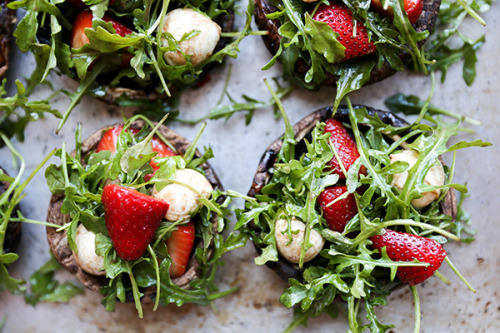
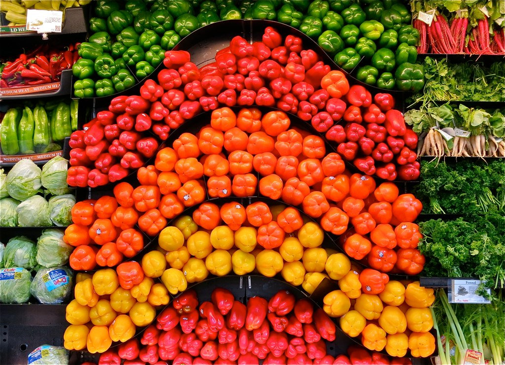
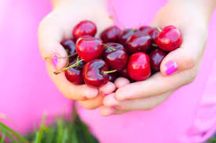

The Future is Vegan
A vegan diet is a vegetarian who excludes the consumption of anything that comes from an animal. Although this diet will most likely be too extreme for a normal individual, people who suffer from certain diseases are now turning to this way of life as an option to control negative effects on their health. There was once a time where doctors advised everyone to keep dairy and meat in their diets for fear of nutrition deficiencies. However now, Americans are becoming more open-minded to different diets as a means to consuming all the nutrients they need.
An abundance of Oreos and french-fries is considered vegan, but not a diet in which you will receive all the nutrients you need to live a healthy life. An appropriately planned vegan diets is a diet filled with fruits, vegetables, and whole grains which are healthy means to achieving optimal nutrition intake. B12 is the only vitamin not received from living on a plant-based vegan diet. This must be taken in a supplementary form or else health deterioration in the form of neurological problems and anemia will occur.
As a vegan myself, I have enjoyed the many benefits that come with the exclusion of animal products. I feel healthier, I have more energy and I can enjoy food knowing that it is sustainable and doesn't harm animals. Obviously, this lifestyle will not be ideal for everyone especially if you're a picky eater, but if you even can just add in a little more plant-based vegan foods you're overall diet will be improved immensely.
| Healthy Vegan Options |
Unhealthy Vegan Options |
| Lentil soup | Oreos |
| Fruit salad | Chips |
| Vegetable soup | Candy |
| Salsa and guacamole | French Fries |
Take a look at this slideshow!
Here are some more photos of healthy vegan food:



Thanks for visiting!
~Morgan Thornton